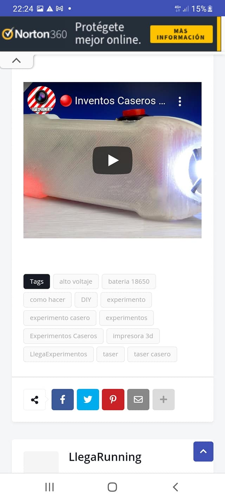
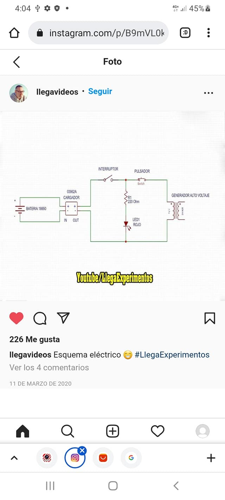

TOCA jajaja
COMO HACER UN TASER
COMO HACER UN TASER FACILMENTE DE 400,000V
El montaje eléctrico es fácil y conseguir las piezas igual,
no son caras valen poco dinero,el asunto es improvisar una carcasa para
montarlo que tampoco es difícil solo hay diseñara una carcasa que le de firmeza
y protencio a los componentes de circuitos y a los electrodos que inyectan
el calanbrazo ala victima.
Lo fijáis con silicosis caliente,lo principal es que funcione el
aspecto da igual,luego se carga con un cargador de móvil de
conector tipo USB adaptado a micro Usb 3.1,tipo C etc...
Hos voy a enseñar a hacer 2 tipos de montaje
con piezas parecidas,en las imágenes salen donde comprarlas.
Aquí os enseño las piezas que son.
--MATERIAL NECESARIO--
-Bateria 18650
-Modulo de cargador TP 4056
(en modulo elige el cargador que mas te guste puedes elegir mini usb 3.1,tipo C etc...
-Generador de alto voltaje dc 3v-6v bis 400k 400000v
-Interruptor de boton momentaneo 16mm
-Led 3v
-Interruptor basculante para basico 10-15mm
-Resistencia 0,5w 2.2 Ohm
-Varilla roscada M6
-Tuercas y arandelas M6

